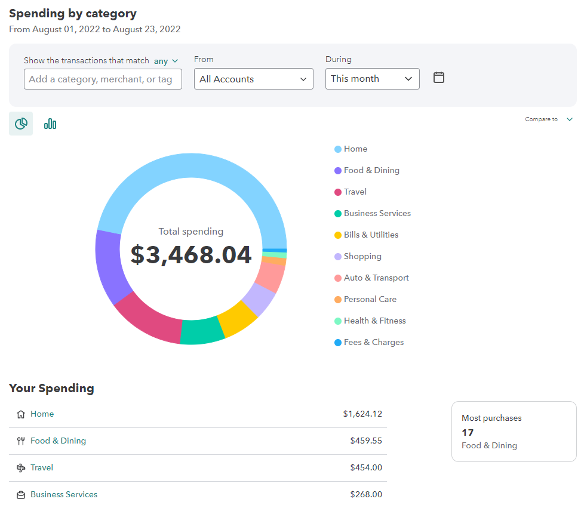
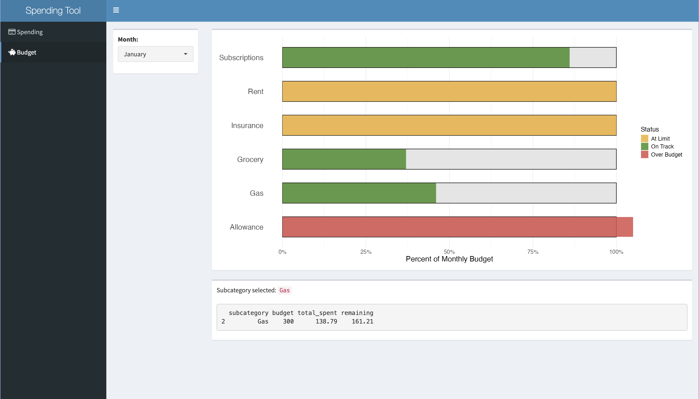

In December 2023 it was announced that the Mint personal finance tool, hosted by Intuit, would no longer be supported. Mint users, such as myself, could download their historical spending data as a CSV file or switch over to Credit Karma. I initially transferred my data to Credit Karma, but I was not thrilled with the user interface. Unsurprisingly the site was focused more on tracking credit history, and I missed the simple interactive plots. In a bid to take control of my personal data, I decided to recreate the old dashboard (below).

Organizing the Data
Before I could start writing code for the dashboard, I needed to decide how to structure my data. Mint’s tool grouped spending based on categories they provided. Since I had been using Mint for several years, I was familiar with my top spending categories and decided to keep most of the naming conventions. Using an Excel spreadsheet, I created a data table for my transaction history with the following structure:
purchase_date
store
total_cost
category
subcategory
split
note
2/18/24
shop1
12.34
Home
Supplies
0
NA
2/28/24
shop2
41.23
Auto
Gas
0
NA
3/01/24
shop1
10.00
Gift
Donation
1
Donated at grocery store
3/01/24
shop3
5.92
Grocery
Grocery
1
NA
To prevent errors in the category and subcategory columns, I created a pre-defined drop down list to choose from. This would minimize misspellings and keep capitalization consistent. I added an additional constraint on the date, so I could not create rows for dates that had not yet passed. The split column is a binary to indicate if a single transaction falls under two difference categories (as shown in the Gift-Grocery example). The split and note columns are useful when viewing the raw data, but were removed before the data visualization step.
Spending by Category
My first goal was to recreate the summary of spending by category, as shown in the image above. Mint had the option to toggle between a pie and bar chart, but I decided to focus on the bar chart since it’s easier to visually compare groups. To achieve this, I needed to create a reactive data table that would be filtered by the selected date range and spending categories. This table contains the sums of each spending category, and was used to create the reactive bar chart.
spending_by_cat_df <-reactive({# starting with the Excel sheet with spending data spending %>%# filter using start and end date inputsfilter(date >= input$cat_bar_chart_input[1] & date <= input$cat_bar_chart_input[2]) %>%# filter using selected spending categoriesfilter(category %in%c(input$cat_df_input)) %>%# calculate total spent for each category between given datesgroup_by(category) %>%summarise(total_spent =sum(total_cost)) %>%arrange(desc(total_spent))})
Bar chart for spending by category
View Code
output$cat_bar_chart_output <-renderPlot({# use reactive data frame for plotggplot(spending_by_cat_df(), # plot total spent vs. categoryaes(x =reorder(x = category, X = total_spent), y = total_spent, fill = category)) +geom_col(aes(fill = category), show.legend =FALSE) +# consistent colors regardless of selected categoriesscale_fill_manual(values =c("Shopping"="#D6306D","Home"="#72C8FF","Grocery"="#7556FF","Education"="#FEC009","Auto"="#1BC599", "Gifts"="#FD8588","Travel"="#B4A4FE","Amusement"="#FD9C4F","Health"="#6FF7B4")) +# add labels for total spentgeom_text(aes(label = scales::dollar(round(total_spent, 0)), hjust =-0.2), size =5) +scale_y_continuous(labels = scales::label_dollar(scale =1),limits =c(0, 1000)) +# plot aestheticstheme_light() +labs(fill ="Category", y ="Total Spent") +theme(axis.text.y =element_text(size =16),axis.text.x =element_text(size =12),axis.title.x =element_text(size =16),axis.title.y =element_blank(),panel.border =element_blank(),panel.grid.major.y =element_blank()) +coord_flip()})
Final Product
The chart is ordered by highest spending, and has labels with rounded totals to summarize top spending categories during the selected time. The data table below provides additional data, including specific stores and subcategories that contribute to the total spent. This is a simple interactive table of the transaction data described in the “Organizing the Data” section.
Budget Tab
Mint also provided several tools to indicate whether your spending was within an established budget. Similar to the spending by category, this required a reactive data table that was connected to the visualization. I don’t budget for every spending subcategory, so there were a few more manual steps in creating the associated table. I then created the bar chart using ggplot2, using the percent of budget spent to create a progress bar.
budget_df <-reactive({# starting with the Excel sheet with spending data spending %>%# filter to list of subcategories that do have a set budgetfilter(subcategory %in% budget_subcategories) %>%# monthly budget based on selectionfilter(month == input$budget_month_input) %>%# calculate total spent within subcategorymutate(subcategory =as.factor(subcategory)) %>%group_by(subcategory) %>%summarise(total_spent =sum(total_cost)) %>%# define numeric budget for each subcategorymutate(budget =case_when(subcategory =="Allowance"~100, subcategory =="Grocery"~320, subcategory =="Gas"~300, subcategory =="Coffee"~25, subcategory =="Subscriptions"~7, subcategory =="Insurance"~183, subcategory =="Rent"~928)) %>%# create categorical column to indicate proximity to budgetmutate(over =case_when(budget < total_spent ~"Over Budget", budget == total_spent ~"At Limit", budget > total_spent ~"On Track")) %>%# calculate percent of budget spent & remaining monthly balancemutate(percent =round(total_spent/budget *100),remaining = budget - total_spent)})
Progress bar chart for percent of budget spent
View Code
output$budget_plot_output <-renderPlot({# use reactive data frame for plotggplot(budget_df(), # plot percent spent for each subcategoryaes(x = subcategory, y = percent, fill = over)) +# plain gray bar for background to progress bargeom_col(aes(y =100), fill ="grey90", col ="black", width =0.6) +# progress bars for each subcategory geom_col(width =0.585, alpha =0.85) +# color based on spending status scale_fill_manual(values =c("At Limit"="#F1AF32","On Track"="#438D29","Over Budget"="#DA4D49")) +# plot aestheticstheme_minimal() +labs(fill ="Status", y ="Percent of Monthly Budget") +scale_y_continuous(labels = scales::percent_format(scale =1)) +coord_flip(ylim =c(0, 100)) +theme(panel.grid.major.y =element_blank(),axis.text.y =element_text(size =16), axis.text.x =element_text(size =12),axis.title.y =element_blank(),axis.title.x =element_text(size =16),legend.title =element_text(size =14),legend.text =element_text(size =12))})
Final Product

This page utilizes clicks as inputs to return a budget summary for the desired month. Once a subcategory on the chart is clicked, the row below the visualization automatically populates specific values regarding this specific budget. This makes it easy to see the remaining balance for the month.
Conclusion
Completing this dashboard has given me the opportunity to explore R-Shiny and create a product that’s solely tailored to my needs. I find myself reaching for this tool often and highly recommend everyone take some time to tackle those personal projects you might have on the back burner. The GitHub repository and full code for this project are not publicly available, as it contains some personal information. However, I hope the code provided is enough to inspire anyone to play with R-Shiny.